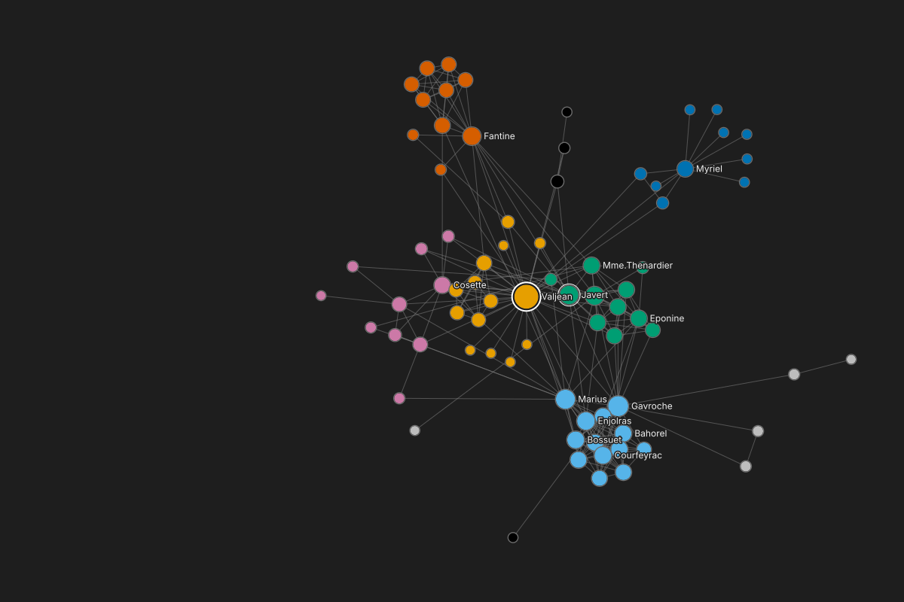

Group color group
214
813
411
110
6 more
NodesEdges
Export table...
Full graph: 77 nodes
Degree and betweenness agree on #1, Valjean. At #2 they part: Gavroche by degree, Myriel by betweenness.Compare rankings...
| Degree | Betweenness exact, unweighted, full graph | |||||
|---|---|---|---|---|---|---|
| label77 values | group10 values | degree (full graph)1 to 36blocked | rankof 77blocked | betweenness0 to 0.57 | rankof 77blocked | |
| Valjean | 2 | 36 | #1 | 0.570 | #1 | |
| Gavroche | 8 | 22 | #2 | 0.165 | #3 | |
| Marius | 8 | 19 | #3 | 0.132 | #4 | |
| Javert | 4 | 17 | #4 | 0.054 | #7 | |
| Thenardier | 4 | 16 | #5 | 0.075 | #6 | |
| Enjolras | 8 | 15 | #6= | 0.043 | #9 | |
| Fantine | 3 | 15 | #6= | 0.130 | #5 | |
| Bossuet | 8 | 13 | #8= | 0.031 | #11 | |
| Courfeyrac | 8 | 13 | #8= | 0.005 | #22 | |
| Bahorel | 8 | 12 | #10= | 0.002 | #27= | |
| Joly | 8 | 12 | #10= | 0.002 | #27= | |
| Combeferre | 8 | 11 | #12= | 0.001 | #29= | |
| Cosette | 5 | 11 | #12= | 0.024 | #16 | |
| Eponine | 4 | 11 | #12= | 0.011 | #18 | |
| Feuilly | 8 | 11 | #12= | 0.001 | #29= | |
| Mabeuf | 8 | 11 | #12= | 0.028 | #13 | |
| Mme.Thenardier | 4 | 11 | #12= | 0.029 | #12 | |
| Babet | 4 | 10 | #18= | 0.005 | #23= | |
| Claquesous | 4 | 10 | #18= | 0.005 | #25 | |
| Grantaire | 8 | 10 | #18= | 0.000 | #34 | |
| Gueulemer | 4 | 10 | #18= | 0.005 | #23= | |
| Myriel | 1 | 10 | #18= | 0.177 | #2 | |
| Montparnasse | 4 | 9 | #23= | 0.004 | #26 | |
| Prouvaire | 8 | 9 | #23= | 0.000 | #35= | |
| Tholomyes | 3 | 9 | #23= | 0.041 | #10 | |
| Bamatabois | 2 | 8 | #26 | 0.008 | #20 | |
| Blacheville | 3 | 7 | #27= | 0.000 | #35= | |
| Brujon | 4 | 7 | #27= | 0.000 | #31 | |
| Dahlia | 3 | 7 | #27= | 0.000 | #35= | |
| Fameuil | 3 | 7 | #27= | 0.000 | #35= | |
| Favourite | 3 | 7 | #27= | 0.000 | #35= | |
| Gillenormand | 5 | 7 | #27= | 0.020 | #17 | |
| Listolier | 3 | 7 | #27= | 0.000 | #35= | |
| Mlle.Gillenormand | 5 | 7 | #27= | 0.048 | #8 | |
| Mme.Hucheloup | 8 | 7 | #27= | 0.000 | #35= | |
| Zephine | 3 | 7 | #27= | 0.000 | #35= | |
| Brevet | 2 | 6 | #37= | 0.000 | #35= | |
| Champmathieu | 2 | 6 | #37= | 0.000 | #35= | |
| Chenildieu | 2 | 6 | #37= | 0.000 | #35= | |
| Cochepaille | 2 | 6 | #37= | 0.000 | #35= | |
| Judge | 2 | 6 | #37= | 0.000 | #35= | |
| Fauchelevent | 0 | 4 | #42= | 0.026 | #14 | |
| Lt.Gillenormand | 5 | 4 | #42= | 0.000 | #35= | |
| Simplice | 2 | 4 | #42= | 0.009 | #19 | |
| Anzelma | 4 | 3 | #45= | 0.000 | #35= | |
| Mlle.Baptistine | 1 | 3 | #45= | 0.000 | #35= | |
| Mme.Magloire | 1 | 3 | #45= | 0.000 | #35= | |
| Pontmercy | 4 | 3 | #45= | 0.007 | #21 | |
| Toussaint | 5 | 3 | #45= | 0.000 | #35= | |
| Woman2 | 5 | 3 | #45= | 0.000 | #35= | |
| BaronessT | 5 | 2 | #51= | 0.000 | #35= | |
| Child1 | 10 | 2 | #51= | 0.000 | #35= | |
| Child2 | 10 | 2 | #51= | 0.000 | #35= | |
| Magnon | 5 | 2 | #51= | 0.000 | #33 | |
| Marguerite | 3 | 2 | #51= | 0.000 | #35= | |
| Mme.Burgon | 7 | 2 | #51= | 0.026 | #15 | |
| Mme.Pontmercy | 5 | 2 | #51= | 0.000 | #32 | |
| MotherInnocent | 0 | 2 | #51= | 0.000 | #35= | |
| Perpetue | 3 | 2 | #51= | 0.000 | #35= | |
| Woman1 | 2 | 2 | #51= | 0.000 | #35= | |
| Boulatruelle | 6 | 1 | #61= | 0.000 | #35= | |
| Champtercier | 1 | 1 | #61= | 0.000 | #35= | |
| Count | 1 | 1 | #61= | 0.000 | #35= | |
| CountessdeLo | 1 | 1 | #61= | 0.000 | #35= | |
| Cravatte | 1 | 1 | #61= | 0.000 | #35= | |
| Geborand | 1 | 1 | #61= | 0.000 | #35= | |
| Gervais | 2 | 1 | #61= | 0.000 | #35= | |
| Gribier | 0 | 1 | #61= | 0.000 | #35= | |
| Isabeau | 2 | 1 | #61= | 0.000 | #35= | |
| Jondrette | 7 | 1 | #61= | 0.000 | #35= | |
| Labarre | 2 | 1 | #61= | 0.000 | #35= | |
| Mlle.Vaubois | 5 | 1 | #61= | 0.000 | #35= | |
| Mme.deR | 2 | 1 | #61= | 0.000 | #35= | |
| MotherPlutarch | 0 | 1 | #61= | 0.000 | #35= | |
| Napoleon | 1 | 1 | #61= | 0.000 | #35= | |
| OldMan | 1 | 1 | #61= | 0.000 | #35= | |
| Scaufflaire | 2 | 1 | #61= | 0.000 | #35= | |